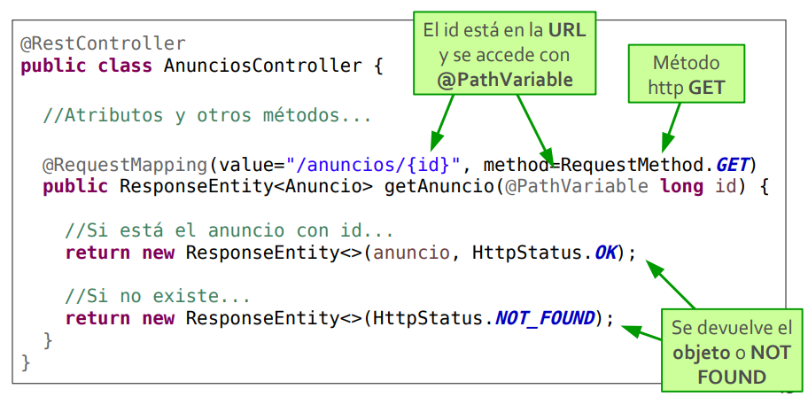
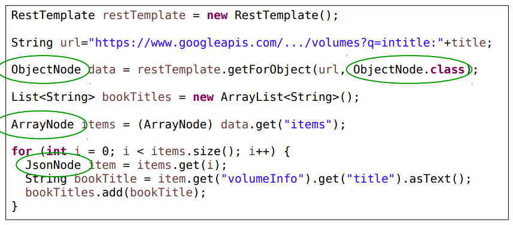
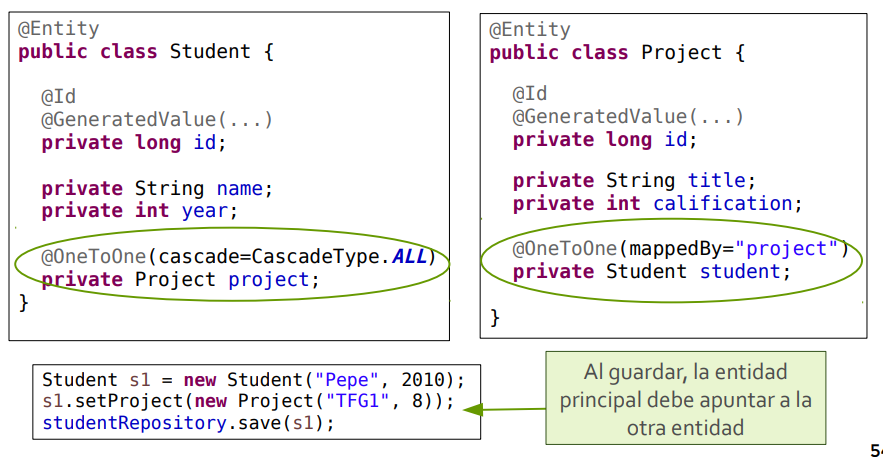
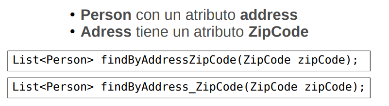
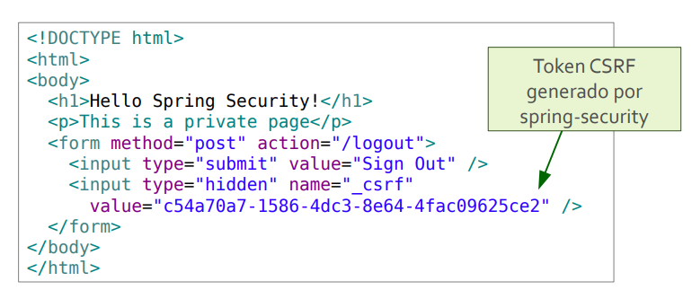

Introducción
El navegador hace la petición mediante URL a un servidor, suele ser servidor remoto y ese servidor devuelve la información. Todo esto va por protocolo HTTP.
Evolución de la web
Al principio los servidores web únicamente servían los ficheros del disco duro, pero en día de hoy se han transformado en aplicaciones que generan cada página con la información que envía el usuario y/o la que está en la base de datos.

Tipo de aplicaciones
Web estático
El servidor web sirve contenido guardado en el disco duro. El navegador visualiza los recursos, suele ser HTML, CSS, JavaScript.
Página web estática
Cuando el usuario hace clicl en un enlace, el navegador repite el proceso con la URL del link y recarga por completo la página web.
Página web interactiva
Las páginas incluyen código JavaScript que se ejecuta en el navegador, y se usa para incluir efectos gráficos.
Web dinámico
El servidor web sirve contenido generado mediante código.
Aplicación web con cliente estático
Generar el recurso dinámicomente, normalmente se hacen consultas a una base de datos. Se recarga la página al completo.
Aplicación web interactiva
El JavaScript se utiliza para crear efectos gráficos. También se utiliza para validaciones de datos en formularios.
Aplicación web con AJAX
El JavaScript permite hacer petición al servidor web en segundo plano y actualiza aquellas partes necesarias de la página sin recargar la página al completo.
Aplicación web SPA
En el lado cliente son aplicaciones autónomas, es un conjunto de recursos HTML, CSS y JavaScript que se cargan en el navegador al acceder a la URL principal. Toda la información del servidor sea obtenida con JavaScript en segundo plano, haciendo peticiones a la API REST y obteniendo la información en JSON.
HTML
Es una variante de XML, tiene un representación por defecto que permite escribir un documento. Entre las etiquetas de apertura y de cierre se puede incluir texto que será visualizado en el navegador.
CSS
Es un formato que diseño para dar estilo a HTML, para separar el estilo del propio contenido. Algunos de los estilos se heredan.
Bootstrap
Bootstrap es un framework fácil de usar y permite la creación de aplicaciones web adaptables (responsive), proporciona compatibilidad entre los principales navegadores.
Ejercicios de HTML, CSS y Bootstrap
Ejericio 1
Crear una página que debe incluir
- Varias secciones con subsecciones
- Fotografías/Imágenes
- Listas de elementos
- Una o varias tablas
- Hiperenlaces
Ejercicio 2
Crea una página web con HTML y CSS con el siguiente botón
Ejercicio 3
Aplica el siguiente estilo
-
Imágenes de fondo
- Propiedad background
- Se puede poner un color por si no carga la imagen
- Se indica la ruta de la imagen con la función url(…)
- Se indica la repetición de la imagen
- Otras propiedades de la imagen
-
Otros detalles CSS
- Padding y margin con valor cero a todos los elementos de la página
- Tamaño de texto a todos los elementos del body a 0.6em y tipo de letra sans-serif
- Posicionamiento en profundidad: z-index: 1
- Quitar los puntos de una lista:
Ejercicio 4
Actualizar la página del ejercicio 3 para que sea responsive usando bootstrap
Más ejemplos
JavaScript
Es un lenguaje de programación interpretado que permite mejorar en la interfaz de usuario y página web dinámica. Con JavaScript se puede modificar la página y ejecutar código cuando se interactúa con ella a través del modelo de objetos del documento DOM. También se pueden hacer peticiones al servidor web en segundo plano y actualizar el contenido de la web con los resultados (AJAX).
DOM (Document Object Model)
Librería (API) para manipular el documento HTML cargado en el navegador. Permite la gestión de eventos, insertar y eliminar elementos, etc.
BOM (Browser Object Model)
Acceso a otros elementos del browser: historial, peticiones de red AJAX, etc… El BOM incluye al DOM como uno de sus elementos.
Integración con HTML
El código JavaScript se puede incluir directamente en el documento
HTML en etiquetas <script>. Pero es recomendable que el código
JS esté en ficheros aparte. El código será cargado y ejecutado cuando
se
encuentre en el documento, antes de continuar procesando el
HTML. Cuando se carga el JavaScript no se pueden cargar otros recursos
en paralelo, por ello, se recomienda poner el elemento <script>
como último elemento de la página.
jQuery
jQuery es una librería JavaScript para lidiar con estos problemas e incompatibilidades. Además ofrece un interfaz mucho más directo e intuitivo interactuar con el documento y el navegador.
Ejemplos
Ejercicios
Maven
- Sistema de gestión de dependencias (librerías) y sus versiones
- Sistema de construcción de proyectos
- Estructura única de proyecto compatible con todos los entornos de desarrollo y sistemas de integración continua
pom.xml Configuración del proyecto
Spring
Spring permite el desarrollo de aplicaciones de servidor.
Spring Boot
Facilita el desarrollo de aplicaciones con Spring, simplifica la configuración y acelera el desarrollo.
Inyección de dependencias
La inyección de dependencias es una técnica que permite especificar un módulo y sus dependencias. Cuando se inicia la aplicación, el framework crea todos los módulos e inyecta las dependencias en los módulos que las necesitan.
Spring MVC
Spring MVC es una parte de Spring para la construcción de aplicaciones web, sigue la arquitectura MVC (Model View Controller).
Controlador
- Manipulan los datos
- Obtienen los datos
- Deciden qué plantilla generará el HTML partiendo de esos datos
Vista
Las vistas en Spring MVC se implementan como plantillas HTML definidas en base a la información del modelo.
Generación de HTML con Mustache
Los ficheros HTML se generar con plantillas que contienen código HTML junto con referencias a variables y funciones.
Formularios y Enlaces
Formas de enviar información del navegador al servidor
Mediante formularios HTML
- La información se envía como pares clave=valor
- Se accede a la información como parámetros en los métodos del controlador
Insertando información en la URL de enlaces
Para acceder a la información se usa el mismo mecanismo que para leer los campos del formulario.
Sesión y Información persistente
Es habitual que las aplicaciones web gestionen información diferente
para cada usuario, información
específica para el usuario
identificado en la página que los demás usuarios no podrán consultar
Sesión
Mantener información mientras el usuario navega por la web
Información persistente
La información se suele guardar en el servidor web en una BBDD y la
lógica de la aplicación determina a qué
información de la BBDD
puede acceder cada usuario.
- Objeto HttpSession
- Componente específico para cada usuario
Ejemplos y Ejercicios
APIs REST
En una aplicación web, el cliente (navegador) se comunica con el servidor (servidor web) usando el protocolo http. En una aplicación web sin AJAX, las peticiones http devuelven un documento HTML que será visualizado por el navegador. En las aplicaciones con AJAX y las aplicaciones SPA, las peticiones http se utilizan para intercambiar información entre el navegador y el servidor (pero no HTML), por ejmplo, con API REST.
REST es acrónimo de REpresentational State Transfer, un servicio que ofrece operaciones CRUD (creación, lectura, actualización y borrado) sobre recursos (items de información) del servidor web. Se aprovecha de todos los aspectos del protocolo http: URL, métodos, códigos de estado, cabeceras…
La información se intercambia en formato JSON (o XML)
JSON es acrónimo de JavaScript Object Notation, se utiliza para la codificación de la información en la mayoría de los servicios REST y se procesa de forma muy rápida en JavaScript.
Los recursos se identifican en la URI
Parte de la URL es fija y otra parte apunta al recurso concreto
- http://server/anuncios/vendo-moto-23-10-2014
- http://server/users/bob
- http://server/users/bob/anuncio/comparto-piso
- http://server/users/bob/anuncio/44
Las operaciones se codifican como métodos http
- GET: Devuelve el recurso, generalmente codificado en JSON. No envían información en el cuerpo de la petición.
- DELETE: Borra el recurso. No envían información en el cuerpo de la petición.
- POST: Añade un nuevo recurso. Envía el recurso en el cuerpo de la petición.
- PUT: Modifica el recurso. Habitualmente se envía el recurso obtenido con GET pero modificando los campos que se consideren (existen optimizaciones)
La información se devuelve codificada en JSON
Petición:
URL:
http://server/bob/bookmarks/6
Método: GET
Respuesta:
mime-type: application/json
Body:
{
id:6,
uri: "http://bookmark.com/2/bob",
description: "A description"
}
Se usan los códigos de estado http para notificar errores
- 100-199: No están definidos. Describen fases de ejecución de la petición.
- 200-299: La petición fue procesada correctamente.
- 300-399: El cliente debe hacer acciones adicionales para completar la petición, por ejemplo, una redirección a otra página.
- 400-499: Se usa en casos en los que el cliente ha realizado la petición incorrectamente (404 No existe).
- 500-599: Se usa cuando se produce un error procesando la petición.
API REST Ejemplos
API REST Ejercicios
Cliente JavaScript
Las aplicaciones web con AJAX o con arquitectura SPA, implementadas con JavaScript, usan servicios REST desde el navegador
// Muestra en la página los títulos de los libros
$(document).ready(function(){
$.ajax({
url:"https://www.googleapis.com/books/v1/volumes?q=intitle:java"
}).done(function(data) {
for(var i=0; i<data.items.length; i++){
$("body").append("<p>"+data.items[i].volumeInfo.title+"</p>");
}
});
});
APIs REST con Spring
Para implementar una API REST con Java se puede usar JAX-RS o Spring MVC.
Se crea un controlador con la clase @RestController.
Se implementa un método en la clase por cada URL de la API REST, se anota con @RequestMapping para indicar la URL y el método http. El método devuelve el objeto que quiere enviar al cliente.
POST
- En @RequestMapping se indica que el método atiende peticiones POST
- El cuerpo de la petición se obtiene con un parámetro anotado con @RequestBody
- La anotación @ResponseStatus(HttpStatus.CREATED) indica que se devuelva el estado 201 al cliente si todo va bien
- Se devuelve el nuevo objeto al cliente (con un id)
GET
- En @RequestMapping se indica que el método atiende peticiones GET
- El id del recurso se condifica en la URL y se accede a él usando un @PathVariable
- Si el recurso existe se devuelve, y si no, se devuelve 404 NOT FOUND. Por eso el método devuelve un ResponseEntity.

DELETE
- En @RequestMapping se indica que el método atiende peticiones DELETE
- El id del recurso se condifica en la URL y se accede a él usando un @PathVariable
- Si el recurso existe se borra y opcionalmente se devuelve
- Si no existe, se devuelve 404 NOT FOUND. Por eso el método devuelve un ResponseEntity
PUT
- En @RequestMapping se indica que el método atiende peticiones PUT
- El id del recurso se condifica en la URL y se accede a él usando un @PathVariable
- El nuevo anuncio se envía en el body y se accede con @RequestBody
- Si el recurso existe se actualiza y se devuelve de nuevo
- Si no existe, se devuelve 404 NOT FOUND. Por eso el método devuelve un ResponseEntity

Controller
Cuando todas las URLs de un controlador empiezan de forma similar, se puede poner la anotación @RequestMapping a nivel de clase con la parte común. Cada método sólo tiene que incluir la parte propia.
JSON
Cuando se implementa una API REST es deseable controlar cómo se convierten los objetos a JSON (y viceversa). Spring utiliza la librería Jackson en modo data binding para hacer esta tarea.
Ignorando atributos circulares
Se pueden ignorar del JSON los atributos de la clases que generan la referencia circular.
Datos diferentes por URL
Tener más o menos información en función de si estamos accediendo a la lista de objetos o a un objeto concreto.
- Creamos un nuevo interfaz Java
- Anotamos algunos atributos con @JsonView pasando ese interfaz como parámetro
- Anotamos el método de @RestController igual que los atributos (@JsonView con el interfaz como parámetro)
- Los objetos que devuelva el método tendrán únicamente los atributos con ese interfaz
Si queremos que en un método de la API REST se devuelvan atributos anotados con diferentes interfaces hay que crear un nuevo interfaz
Ese nuevo interfaz tiene que heredar de los interfaces usados por los atributos.
Usamos ese interfaz en el @JsonView del método del @RestController
RestTemplate
Para hacer peticiones REST en Spring se usa un objeto de la clase RestTemplate. Se indica la URL y la clase de los objetos que devolverá la consulta.
Es posible acceder a los datos directamente sin definir clases.

Ejemplos y Ejercicios de APIs REST
Bases de datos con Spring

Tiene un completo soporte de acceso a bases de datos de diferentes tipos. El proyecto Spring Data ofrece mecanismos para el acceso a Bases de datos SQL y no relacionales.
- Creación del esquema partiendo de las clases del código Java (o viceversa)
- Conversión automática entre objetos Java y el formato propio de la base de datos
- Creación de consultas en base a métodos en interfaces
JPA
ORM o “mapeo objeto relacional” realiza las conversiones pertinentes entre objetos/clases y filas/tablas. Se genera una tabla por cada entidad, por cada atributo de la clase de un tipo simple (entero, float, String, boolean…), se crea un campo en la tabla.

Relación 1:1 unidireccional
Operaciones en cascada
Si la anotación @OneToOne se configura con cascade = CascadeType.ALL entonces ambos objetos de la relación tienen el mismo ciclo de vida. Al guardar el objeto principal, se guarda el asociado, Al borrar el objeto principal, se borra el asociado.
Relación 1:1 bidireccional

Relación 1:N
Cuando existe una relación 1:N entre entidades se usan las anotaciones @OneToMany y @ManyToOne.
Relación M:N
Cuando existe una relación M:N entre entidades se usa la anotación @ManyToMany
Repositorio
-
Consulta
- List find…By…(…)
- List read…By…(…)
- List query…By…(…)
- List get…By…(…)
-
Contar
- int count…By…(…)
-
Expresiones
- And
- Or
-
Comparadores
- Between
- LessThan
- GreatherThan
-
Modificadores
- IgnoreCase
-
Ordenación
- OrderBy…Asc
- OrderBy…Desc
Propiedades de los objetos relacionados
No sólo podemos filtrar por un atributo de la propia entidad, también podemos filtrar por un atributo de otra entidad con la que esté relacionada la principal

Paginación
Pageable
El objeto Pageable incluye la información de ordenación de la URL.
Ordenación
Podemos pasar un parámetro de tipo Sort que controla la ordenación
repository.findAll(new Sort("nombre")));
repository.findAll(new Sort(new Order(Sort.Direction.ASC, "nombre"))));
Limitar los resultados
User findFirstBy...();
User findTopBy...();
User findTopDistinctBy...();
List<User> queryFirst10By...();
List<User> findTop3By...();
List<User> findFirst10By...();
Java Persistence Query Language (JPQL)
public interface TeamRepository extends JpaRepository<Team, Long> {
@Query("select t from Team t where t.name = ?1")
List<Team> findByName(String name);
}
Configuración
Arquitectura
Los servicios y los módulos de integración suelen estar anotados con @Service para indicar su naturaleza @Service es similar a @Component
Ejemplos y Ejercicios de Spring Data
Seguridad con Spring
Autenticación
Sirve para garantizar que una entidad (persona o máquina) es quien dice ser, se consigue mediante unas credenciales login-password
Autorización
Sirve para discernir si una entidad tiene acceso a un recurso determinado, determina si un usuario puede acceder a un recurso determinado mediante roles
Integridad
Garantiza al receptor del mensaje que los datos recibidos coinciden exactamente con los enviados por el emisor. La integridad se consigue típicamente con funciones Hash (resumen)
Confidencialidad
Proporciona protección para evitar que los datos sean revelados a un usuario no autorizado. La confidencialidad se consigue típicamente usando técnicas criptográficas de cifrado de mensajes.
HTTPS
Con HTTPS se consigue que toda la información que se intercambie un navegador web con un servidor web esté cifrada.
Spring security
Comunicación cifrada con https
server.port = 8443
server.ssl.key-store = classpath:keystore.jks
server.ssl.key-store-password = password
server.ssl.key-password = secret
Usuario con credenciales en código
- Spring-security impide que un usuario pueda acceder a ciertas páginas si no se ha autenticado correctamente
- Si el usuario intenta acceder, se le redirige al formulario de login
- El desarrollador configura qué páginas son públicas y cuales son privadas
Protección con CSRF
Cross Site Request Forgery es un tipo de ataque en el que una página
web intenta hacer una petición a otra web en la que estás logueado. La
forma de evitarlo es generar un token por cada formulario y verificar
que el token es válido al procesar los datos del formulario. Cada
formulario en una web con protección CSRF
debería ser similar a
este.

@RequestMapping("/login")
public String login(Model model, HttpServletRequest request) {
CsrfToken token = (CsrfToken) request.getAttribute("_csrf");
model.addAttribute("token", token.getToken());
return "login";
}
Para pasar el token al cada modelo implementamos un handler
Diferentes tipos de usuarios
Configuramos las páginas que puede ver cada tipo de usuario
@Configuration
public class SecurityConfiguration extends WebSecurityConfigurerAdapter {
@Override
protected void configure(HttpSecurity http) throws Exception {
// Public pages
...
// Private pages (all other pages)
http.authorizeRequests().antMatchers("/home").hasAnyRole("USER");
http.authorizeRequests().antMatchers("/admin").hasAnyRole("ADMIN");
// Login form
...
// Logout
...
}
}
Usuarios en BBDD
Características para Web SPA + API REST con seguridad
- Acceso público y Acceso restringido
- Comunicación cifrada con HTTPS
- Autenticación mediante HTTP Basic Auth
- Autorización basada en URLs
- Gestión de sesión: Cookies y HttpSession
- No se usa protección para CSRF
Ejemplos y Ejercicios de Spring Security
Despliegue de apps Spring
Jar
Es lo más recomendable porque facilita la actualización de la aplicación al no estar limitado por el contenedor ni el administrador. Las arquitecuturas basadas en microservicios promueven este formato.
War
El formato de empaquetado de apps web Java más usado, ideal cuando varias aplicaciones web están en el mismo servidor físico y el mismo dominio
Ejecutar la app web con el .war
Necesitamos tener un servidor disponible, cada servidor tiene su
propio sistema de depliegue vía web o
usando algún tipo de
cliente. Veremos cómo desplegar en Tomcat vía web.